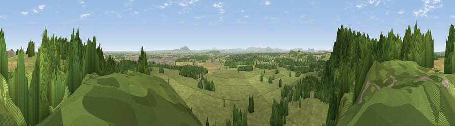

Viewpoint near Grinshill
#10480 in England · top 35% of its area beats it · near GrinshillWhere it is
The exact computed spot (SJ 52625 23675). Click the marker for map links.
The view, rendered

A 360° render of this exact spot computed from the terrain model, tree cover and land cover — summer colours, afternoon light, calibrated against photographs of famous viewpoints. Real trees, hedges and buildings will differ in detail.
The panorama
Grey silhouette: terrain skyline in each direction (720 bearings, Earth curvature and refraction included). Dashed green: skyline with trees (+15 m) and buildings (+8 m) as obstacles. Blue strip: how far the ground is visible on each bearing.
Where the view opens
Wedge length = distance to the farthest visible ground on that bearing (vegetation-aware). Rings at 10, 25 and 50 km.
What fills the view
57% grassland · 38% woodland · 5% cropland ·
Angular shares of the visible panorama (visual magnitude), not map area. Landscape diversity 0.38 (0–1 Shannon).
Key numbers
More beautiful places nearby
The staircase of upgrades: each row has a higher view potential than everything closer. Driving times are estimates from straight-line distance, calibrated against real road routing — check an actual route before setting out.
| Place | Direction | Drive | Score |
|---|---|---|---|
| Viewpoint near Acton Reynald | NE · 1 km | ~2 min | 69.3 |
| Grinshill | W · 1 km | ~2 min | 75.2 |
| Viewpoint near Marchamley | ENE · 8 km | ~15 min | 77.5 |
| The Ercall | SE · 18 km | ~31 min | 79.4 |
| Viewpoint near Little Wenlock | SE · 18 km | ~32 min | 84.2 |
| The Wrekin | SSE · 19 km | ~32 min | 85.0 |
| Viewpoint near Little Wenlock | SSE · 19 km | ~32 min | 86.6 |
| North Hill | SSE · 81 km | ~105 min | 86.8 |
52.80853, -2.70425 · source: screening · position refined by local search. Computed location — check access rights before visiting.